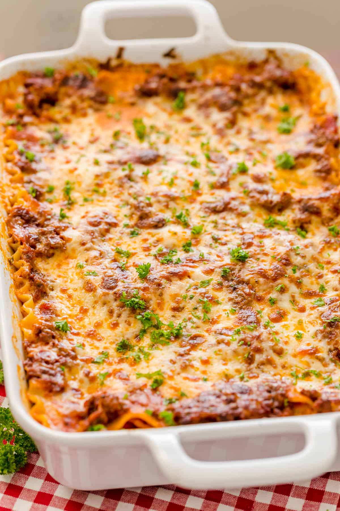

Lasagna recipe

Description
A baked dish containing layers of boiled lasagna, and usually lots of cheese, a seasoned sauce of tomatoes, and meat or vegetables. Lasagna is the perfect meal it keeps fresh, reheats and freezes really well and it is so nice to have something in the fridge to enjoy throughout the week. Great for meal planning and kid's lunches.
Ingredients
- 1 packet of lasagna
- 500 grams of ground beef
- 1 clove of garlic
- 150 grams of shredded mozzarella cheese
- 150 grams of shredded cheddar cheese
- 1 jar of white sauce or spaghetti sauce
- salt and pepper to taste
Directions
- Step 1Bring a large pot of lightly salted water to a boil. Add pasta and cook for 8 to 10 minutes or until al dente; drain.
- Step 2Preheat oven to 350 degrees F (175 degrees C). In a large skillet over medium-high heat, brown beef and season with salt and pepper; drain. Stir in spaghetti sauce and garlic and simmer 5 minutes.
- Step 3In a medium bowl, combine mozzarella, Cheddar and ricotta; stir well. In 9x13 inch pan, alternate layers of noodles, meat mixture and cheese mixture until pan is filled.
- Step 4Bake in preheated oven for 30 minutes, or until cheese is melted and bubbly.
- Step 5Remove it from the oven and allow to rest for a few minutes before serving.